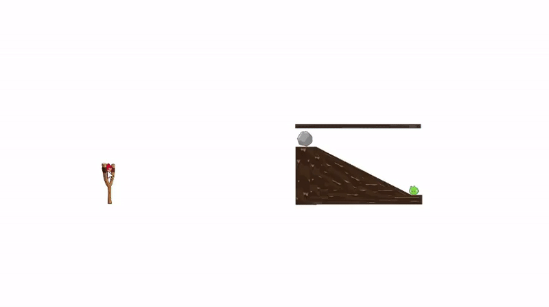
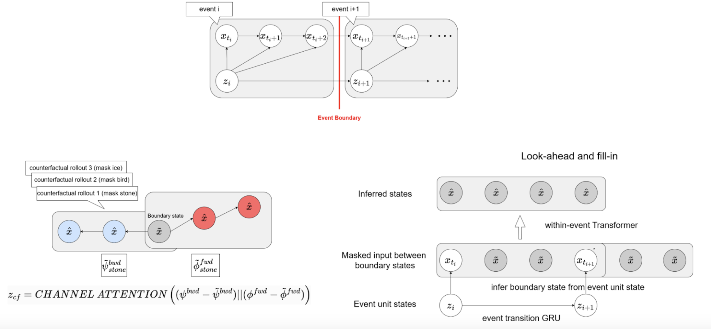
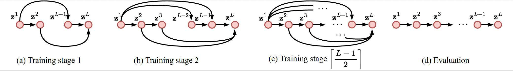
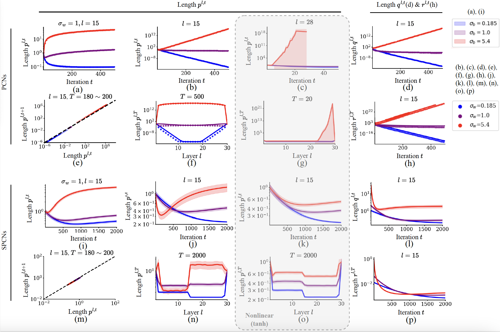
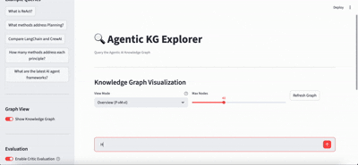
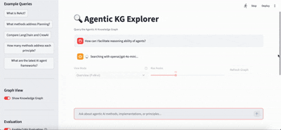
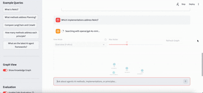
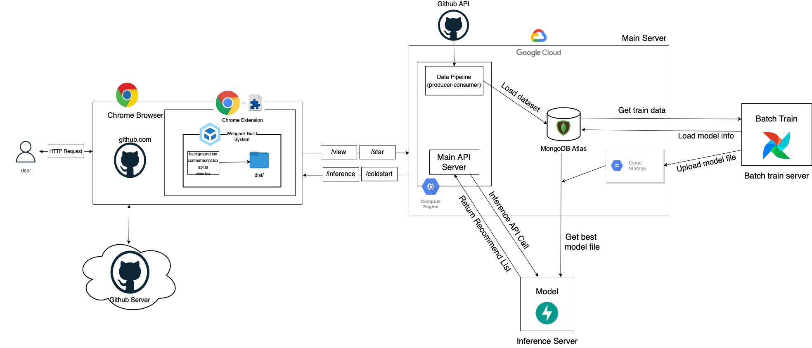

|
Youngha Jo
I am an end-to-end ML engineer at LG CNS GenAI Business Team — I self-learn whatever a problem needs and carry models from design and training through evaluation, serving, and operation. At LG CNS I've worked across LLM services from PoC planning to production, including a real-time LLM-as-a-judge evaluation batch service deployed in a financial client's production network.
Previously, I graduated with a Master's degree from Brain and Machine Intelligence Lab (BML) at KAIST, advised by Sang Wan Lee, where I ran event-cognition research end to end — from hypothesis to a Human-AI experiment platform and deep-learning models.
Before KAIST, I completed a recommender system track at Naver Boostcamp AI Tech (3rd cohort).
I received my B.S. in Electrical and Electronic Engineering (minor in Psychology) from Yonsei University,
where I also worked as an undergraduate research assistant in Computational Clinical Science Lab (SNU, advised by Woo-Young Ahn)
and led the cognitive science study club CogSci::IN.
CV /
Github /
Email /
전공 소개 슬라이드 /
포트폴리오
Skills & Tools
- Programming Languages: Python (Advanced), C++ (Intermediate), JavaScript, C#
- Machine Learning: PyTorch (Advanced), Tensorflow
- LLM & Agent Development: LangChain/LangGraph, Hugging Face, MCP
- Backend & Database: FastAPI, Node.js, PostgreSQL, Neo4j, MongoDB, Firebase
- Tools & Platforms: Streamlit, Git, Unity, Docker
English Proficiency
- OPIc: Intermediate High (2025.01.31)
- TEPS: 2+ (2021.10.02)
|
|
Experience
LG CNS GenAI Business Team | AI Engineer (2025.07 ~ present)
PoC development to service planning, working on AI systems from a production perspective.
Shinhan Card — AI Agent Evaluation Automation (AutoEval, real-time LLM-as-a-judge batch service): sole design & implementation, jointly planned with Shinhan Card's product planner.
- Built a production batch architecture that collects and evaluates AI agent service logs from the operational DB on a 10-minute window — fault-tolerant via a DB state machine, with resumable/retryable processing on worker failure (FastAPI + SQLAlchemy)
- Designed the LLM-as-a-judge evaluation scheme (turn- and session-level metrics), with intent/tool catalog–based structured evaluation and a delivery-payload assembly API for external integration
- Optimized token and call usage for a closed-network shared-vLLM environment via a single structured judge prompt instead of per-metric calls
- Live in Shinhan Card's production network (~100 QA per 10 min); validated judge reliability with a self-curated golden QA set and Grafana monitoring
- Deployed and operated on the company's Kubernetes-based internal AI platform — brought up pods on the dev/production clusters via image and ConfigMap setup, promoted dev→production through a GitLab CI/CD pipeline, and diagnosed incidents with infra engineers from pod logs and resource state
Other responsibilities:
- Designed AI OCR/VLM model evaluation framework for insurance documents — built cell-level comparison with normalization logic for systematic comparison across document types and model versions
- Planned and developed RFP-based proposal auto-generation PoC — designed and implemented agent pipeline from requirement analysis to PPT slide generation using LangGraph
- Planned and proposed AI Agent services for multiple financial institutions — analyzed RFP technical requirements and designed service architecture through collaboration with cross-functional engineers
|
|
Research
I'm interested in building AI systems that model and analyze complex sequential processes,
with a focus on how humans structure predictions and plans into meaningful units.
My research combines cognitive science theory with deep learning model design,
and I value building complete experimental systems — from platform development to human experiments to computational model validation.
|
Event Unit Prediction Research (23.07~24.12)

Human Experiment Platform:
Built a Unity WebGL-based interactive experiment platform to collect human prediction data.
Integrated Google Firebase for real-time data storage and analysis.
Designed tasks where participants predict events in a physics-based environment (Angry Birds).
Check online experiment link to conduct it by yourself!

Hierarchical Video Prediction Model: A model that predicts future frames in a video by learning hierarchical structures.
Designed a temporal abastraction model that incorporates causal inference & event-based representation.
Demonstrated AI’s ability to simulate human-like event anticipation.
|
Stable Predictive Coding Network Research (24.01~)


SPCN: Investigated stability issues in Predictive Coding Networks (PCN) and proposed a novel Stable Predictive Coding Network (SPCN).
Conducted experiments to analyze instability factors in PCN, identifying key failure points.
Designed a new architecture that stabilizes learning in PCN (SPCN), and showed improved performance in various tasks.
Contributed to the project by implementing models, running experiments, and modularizing the codebase for team-wide use.
|
|
Publications
Jo, Y., Lee, S. W. (2025). Designing a Platform and Algorithm for Event-Cognitive Unit Prediction Experiments. Patent pending.
Ha, M., Kim, H., Sung, Y., Jo, Y., Kang, M., Lee, S. (2026). Stable and Scalable Deep Predictive Coding Networks with Meta Prediction Errors. International Conference on Learning Representation (ICLR). (accepted)
|
Projects
Multimodal Manual RAG — Diagram-Grounded Manual QA (26.04~present)
A 12-week individual project on documents whose answers live in diagrams rather than body text — home-appliance manuals —
grown in stages from text RAG to cross-modal retrieval to a multimodal agent.
- Built the benchmark and metrics myself: a 61-question golden set over 6 manuals (252 pages), including 27 image-required questions whose answers exist only in diagrams; automated the evaluation pipeline with RAGAS plus domain metrics (Citation, Refusal)
- Retrieval: Dense-only Top-1 60.9% → Hybrid (BM25+Dense, RRF) + cross-encoder reranker 91.3% → LangGraph 4-node Agentic RAG with Self-Query 95.7%
- Cross-modal design decision: instead of CLIP image embeddings (12%), adopted VLM-generated structured captions (75%) merged into the text index; a 3-way comparison of page-level vs. region-level captioning settled on region-level (image-required correct 0/27 → 8/27, +6% latency)
- Failure analysis and recorded decisions: isolated 6 cases that had the evidence but failed to answer, re-running generation with context held fixed — the prompt fix reduced refusals but introduced hallucinations and confident wrong answers, so it was rejected. Ran the project on a Claude Code loop (weekly spec → implementation → retrospective → ADR), accumulating 12 ADRs
Agentic AI Knowledge Graph Explorer (25.12~present)
A knowledge exploration system that tracks the co-evolution of AI research (papers) and services (frameworks)
in the Agentic AI domain, built with LangGraph + Neo4j + ChromaDB.
User Query
LangGraph Pipeline
Intent Classifier
→
Search Planner
→
Graph Retriever
→
Synthesizer
Web Expander
Critic Agent
Neo4j Knowledge Graph
(Principles ↔ Methods ↔ Implementations ↔ Standards)

Graph Visualization Settings

Query Processing

Results with Graph
- Designed a knowledge graph schema with 11 core Principles, 31 Methods, 16 Implementations (67 nodes, 79 relationships)
- Built a 4-node LangGraph pipeline: Intent Classifier → Search Planner → Graph Retriever → Synthesizer
- Implemented Neo4j client (520 lines) with domain-specific Cypher queries
- Added a Critic agent quality gate (evidence, duplication, consistency checks) with a re-search loop so the graph expands itself; Tavily for web expansion
- Developed with Claude Code for rapid prototyping
GitHub: https://github.com/hawe66/agentic-kg-explorer
Modulabs LLM Study — From Theory to Agent Development (25.05~26.02)
Participated in a year-long LLM study across three sessions at Modulabs:
Session 1 — LLM Paper Reading (25.05~25.07):
Studied the evolution of LLM architectures (Attention, Transformer, Deepseek) and alignment methods (RLHF, DPO).
[Study Link]
Session 2 — SLM Fine-tuning (25.07~25.09):
Conducted practical fine-tuning experiments comparing LoRA, QLoRA, and full fine-tuning
using DistilGPT2 and GPT2-Medium on the CNN/DailyMail summarization task.
Compared VRAM usage, trainable parameters, training speed, and generation quality.
[Study Link]
[Colab Notebook]
Session 3 — LangChain/LangGraph Agent Development (25.09~26.02):
Built document search systems using RAG (LangChain + FAISS/Chroma + OpenAI Embeddings).
Developed multi-turn conversational RAG chatbots with LangGraph memory (checkpointer).
Implemented intent-based routing with conditional edges in LangGraph.
Deployed FastAPI services with LangSmith monitoring on Railway.
Built demo interfaces with Streamlit.
[Study Link]
Github Repository Recommendation Service (22.05~22.06)

Built a personalized recommendation engine for GitHub repositories as the final project of Naver Boostcamp AI Tech (Recommender System track).
- Problem: Users struggle to discover relevant repositories among GitHub's millions of repos.
- Approach: Developed ML ranking algorithms with a hybrid recommendation model to mitigate cold-start issues.
- Role: Designed and implemented the main API server (Node.js + MongoDB), handling model inference and user service APIs.
- Team: 5 members, responsible for backend architecture and recommendation serving.
GitHub: https://github.com/boostcampaitech3/final-project-level3-recsys-04
|
|
{kind=link}
{kind=link}
{kind=link}
{kind=link}
{kind=link}
{kind=link}